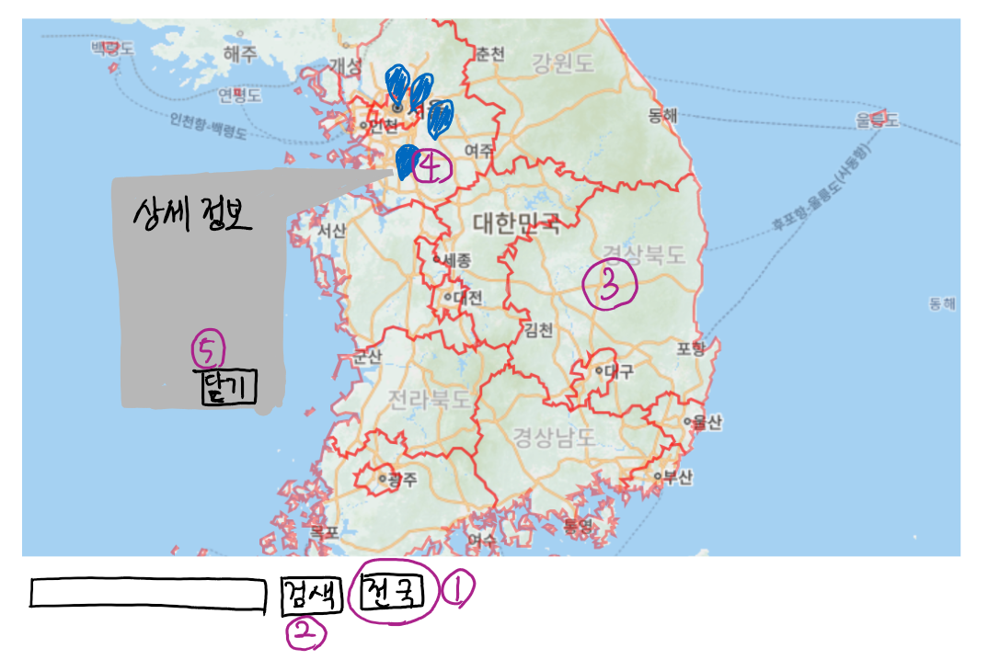

버튼별 입력/출력
1.
입력: 전국 버튼을 누른다.
출력: 전국의 재난 발생 위치를 핀으로 표시해 준다.
2.
입력: 지역 이름을 text입력으로 받고 검색 버튼을 누른다.
출력: 검색한 지역의 재난 정보를 핀으로 보여준다.
3.
입력: 지도에서 행정 구역을 클릭한다.
출력: 클릭한 행정 구역의 재난 정보를 핀으로 보여준다.
4-1.
입력: 핀을 클릭한다.
출력: 핀이 있는 위치에 해당하는 자세한 재난 정보를 보여주는 창 또는 툴팁을 띄운다.
4-2.
입력: 핀을 더블클릭 한다.
출력: 핀이 있는 위치로 지도의 초점이 이동한다.
5.
입력: 핀으로 열린 정보창의 닫기 버튼을 누른다.
출력: 정보창을 닫는다.
6. (미정)
입력: 핀이 표시된 위치에서 가까운 경찰서, 소방서, 보건소 등을 검색하는 버튼
출력: 지도의 초점 가까운 경찰서, 소방서, 보건소로 이동시킨다.